공략집 › 동거, 신혼, 앨범, 가족
동거, 신혼, 앨범, 가족 공략
동거부터 꿈의 집, 신혼, 히로인 취향, 집안일, 아기와 육아, 아이 엔딩 5종, 가족 앨범, 이혼까지 가족 콘텐츠 총정리
- 🏠 동거는 연애 중에 집(가장 싼 7,000만 원 원룸이면 충분)만 있으면 그녀가 먼저 제안해요. 수락하면 그녀 메시지 비용이 헤어지기 전까지 쭉 반값이에요.
- 💐 신혼은 결혼 뒤 15주 안에 그녀의 꿈의 집을 사야 열려요. 15주 동안 매주 로맨틱 이벤트가 오고, 아기 조건(집안일)이 절반이 돼요.
- 👶 아기는 결혼 15주 + 집안일 29번(신혼이면 15번) + 넘친 호감도 30. 아이를 대학생까지 키우려면 태어난 뒤 최소 16주, 아이 메시지에 꼬박꼬박 ①로 답해야 해요.
- 📷 가족 앨범은 아기가 태어나면 열리고, 대학 선택을 하면 끝 도장이 찍히며 덮여요.
- ⚠️ 동거, 신혼은 9명만, 취향은 6명만, 아이는 소피, 소현, 은혜만 없어요(아래 표).
히로인별로 되는 것 한눈에 보기 🗂️#
제일 먼저 이 표부터 보세요. 누구랑 결혼할까 고를 때 이게 생각보다 커요. 같이 살 수 없는 히로인과 결혼하면 우리 둘 탭, 신혼, 꿈의 집 엔딩은 통째로 없거든요.
| 히로인 | 동거 | 신혼 (꿈의 집) | 취향 | 아이 | 아이 이름 |
|---|---|---|---|---|---|
| 서윤 | ⭕ | ⭕ 리버뷰 복층 오피스텔 | ⭕ | ⭕ | 서준 (아들) |
| 하린 | ⭕ | ⭕ 새벽만 34평 신축 | ⭕ | ⭕ | 서아 (딸) |
| 다은 | ⭕ | ⭕ 캐시 원룸형 오피스텔 | ⭕ | ⭕ | 준우 (아들) |
| 민지 | ⭕ | ⭕ 레거시 원룸형 오피스텔 | ⭕ | ⭕ | 하은 (딸) |
| 아영 | ⭕ | ⭕ 리버뷰 강변 펜트하우스 | ⭕ | ⭕ | 시우 (아들) |
| 혜윤 | ⭕ | ⭕ 핫픽스 마당 넓은 단층집 | ⭕ | ⭕ | 다온 (딸) |
| 소라 | ⭕ | ⭕ 새벽만 역세권 오피스텔 | ❌ | ⭕ | 로아 (딸) |
| 지우 | ⭕ | ⭕ 서버산맥 통나무 전원주택 | ❌ | ⭕ | 예준 (아들) |
| 하나 | ⭕ | ⭕ 디버그 호숫가 별장 | ❌ | ⭕ | 아린 (딸) |
| 은서 | ❌ | ❌ | ❌ | ⭕ (드물어요) | 은우 (아들) |
| 소피 | ❌ | ❌ | ❌ | ❌ 없음 | — |
| 소현 | ❌ | ❌ | ❌ | ❌ 없음 | — |
| 은혜 | ❌ | ❌ | ❌ | ❌ 없음 | — |
소라, 지우, 하나는 개발 인플루언서 칭호 회차에서만 만나요. 은서는 키다리 아저씨 칭호 회차 전용이고, 결혼 뒤 아기 제안 조건(아래)을 채우면 아이도 생겨요. 다만 은서 루트는 결혼이 늦어서 실제로는 드물어요. 소피, 소현, 은혜는 아기 이야기가 아예 안 나오고, 이 셋과 연애, 결혼 중이면 앨범 탭도 안 보여요.
같이 살 수 없는 히로인이라도 결혼하면 집안일은 똑같이 필요해요. 집안일 0번인 주엔 호감도 −30, 호감도 0이면 이혼 이야기가 와요(소피, 소현, 은혜도 자기 말투로 와요).
가족 루트 전체 흐름 🧭#
- 연애 시작고백을 받아 사귀면(여자친구) 가족 탭에 그녀가 떠요. 썸, 연애 과정은 히로인 공통 규칙에 있어요.
- 집 사기 → 동거투자 탭 → 부동산에서 원룸 이상 아무 집이나 사면, 다음 주쯤 그녀가 동거해 보고 싶어라고 해요.
- 결혼데이트를 쌓아 청혼을 받아요. 결혼하면 일정에서 데이트 칸이 사라지고 + 집안일 돕기가 생겨요.
- 꿈의 집 → 신혼 15주결혼 뒤 15주 안에 그녀가 힌트로 말하던 꿈의 집을 사면 신혼 제안이 와요.
- 취향 채우기(6명만) 신혼 동안 그녀가 갖고 싶다던 물건까지 다 사 주면 나는 이제 모든 걸 가졌어.
- 아기결혼 15주 + 집안일 + 넘친 호감도가 차면 아기 이야기가 와요. 신혼 중엔 안 와요.
- 육아 → 대학매주 육아 칸과 아이 메시지로 키우면 유치원 → 초등 → 중학 → 고등 → 대학. 단계마다 아이가 진로 메시지를 보내요.
- 100주차그때도 결혼 중이면 결혼, 동거, 신혼, 취향, 아이, 내조 엔딩이 한꺼번에 기록돼요 🎉
데이트 6칸, 집안일 6칸, 육아 6칸으로 최선을 다했을 때 기준이에요(표 전체는 맨 아래).
- 아영 (운명적 만남): 결혼 16주 → 신혼 17주 → 아기 32주 → 대학 메시지 약 53주. 가족 엔딩 전부 여유 있게 가능.
- 서윤 (일반 히로인): 결혼 약 65주 → 신혼 66주 → 아기 약 81주 → 대학은 100주차에 겨우, 아이 엔딩 약 25%.
동거 💞#
여자친구 + 내 집(원룸부터) = 동거 제안. 수락하면 그녀 메시지 비용이 반값, 대신 다른 히로인은 조용해져요.
동거 제안이 오는 조건#
| 조건 | 내용 |
|---|---|
| 관계 | 연애 중(여자친구). 사귀기 시작한 주의 다음 주부터 |
| 집 | 원룸, 오피스텔, 아파트, 전원주택/별장 중 1채 보유 (상가, 창고, 리조트, 농지는 집이 아니에요) |
| 타이밍 | 집이 미리 있었으면 사귄 그 주가 끝날 때(첫 마감) 바로 와요. 사귄 무렵이나 그 뒤에 샀으면 산 주의 다음 주가 끝날 때 와요(산 즉시는 안 와요) |
| 횟수 | 회차당 1번. 거절하거나 읽씹하면 그 회차엔 다시 안 와요 |
가장 싼 집은 레거시 구도심의 레거시 풀옵션 원룸 7,000만 원이에요. 게임 안 설명에도 여자친구와 같이 살 수 있는 최소 조건이라고 적혀 있어요. 투자 탭(부동산 포함)은 잔고가 처음 2,000만 원을 넘은 주 마감에 열려요.
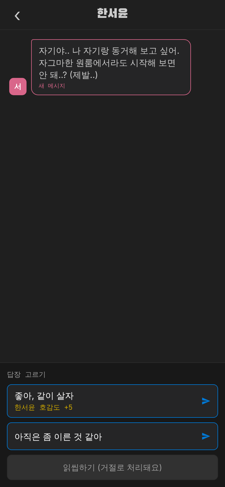
| 답 | 결과 |
|---|---|
| 좋아, 같이 살자 | 동거 시작, 호감도 +5. 우리 둘 탭이 열리고 💞 동거 시작 줄이 그어져요 |
| 아직은 좀 이른 것 같아 | 응.. 알았어. 이번 회차엔 끝 (벌점은 없어요) |
| (읽씹) | 거절과 같아요 |
동거하면 달라지는 것#
- 💸 반값: 그녀가 보낸 메시지에서 돈이 드는 답은 전부 절반이에요. 답 옆에 💞 동거 효과로 반값 (원래 …)이 보여요. 우리 둘 메시지, 결혼 뒤 육아 메시지도 그녀가 보낸 거라 다 반값이에요.
- 💍 결혼해도 계속: 동거하다 결혼하면 반값은 이혼 전까지 쭉 유지돼요. 반대로 동거 없이 바로 결혼 → 신혼으로 가면 반값은 없어요.
- 🔕 다른 히로인은 조용: 같이 사는 동안(결혼 후 포함) 다른 히로인의 메시지는 오지 않아요.
- 🏡 우리 집은 못 팔아요: 함께 사는 집 1채(꿈의 집이 있으면 그 집, 없으면 가장 싼 집)는 판매 버튼을 누르면 자기야.. 이거 팔면 우리는 어디서 살아...?가 나오고 안 팔려요. 꿈의 집이면 자기야.. 이거 우리 꿈의 집이잖아... 나머지 매물은 자유롭게 팔 수 있어요.
- 💭 꿈의 집 힌트: 동거 중엔 3주마다 우리 둘에서 그녀가 꿈의 집을 혼잣말로 흘려요. 이게 신혼 준비 신호예요.
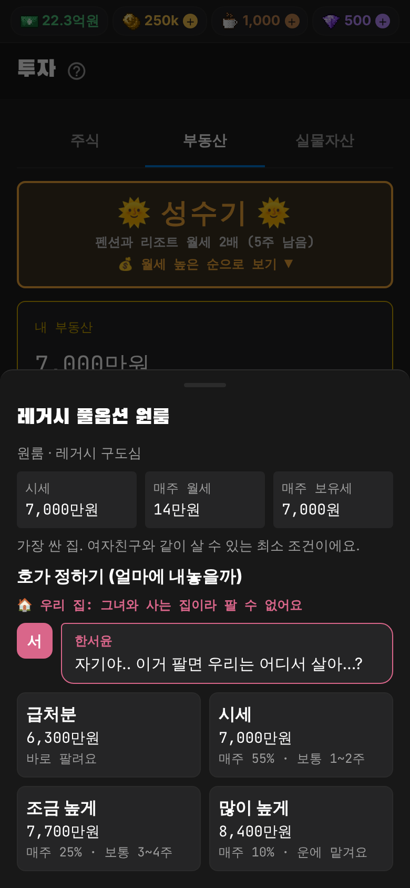
답이 필요 없는 혼잣말이 3주마다 와요. 썸일 때 가장 가까운 썸이 요즘 혼자 사는 집이 너무 조용해.. 누가 같이 있으면 좋겠다, 연애 중인데 집이 없으면 아.. 원룸이라도 있으면 같이 살 텐데.. ㅠ. 이 말이 보이면 원룸 하나 사 줄 타이밍이에요.
동거 엔딩은 회차가 끝날 때도 함께(동거 중이거나 그 뒤 결혼 중)여야 해요. 중간에 헤어지거나 이혼하면 기록되지 않아요. 그리고 동거 없이 결혼하면 이 엔딩은 영영 못 봐요. 결혼 전에 꼭 동거부터 하세요.
꿈의 집 9곳 🏡#
꿈의 집은 히로인마다 정해진 매물 1개예요. 매물 이름과 시작 가격은 회차마다 똑같고, 시세에 따라 오르내려요. 같은 동네의 비슷한 다른 매물은 인정되지 않으니 이름을 꼭 확인하세요.
| 히로인 | 꿈의 집 (매물 이름) | 지역 | 종류 | 시작 가격 |
|---|---|---|---|---|
| 민지 | 레거시 원룸형 오피스텔 | 레거시 구도심 | 오피스텔 | 1억 7,000만 |
| 소라 | 새벽만 역세권 오피스텔 | 새벽만 신도시 | 오피스텔 | 2억 3,000만 |
| 다은 | 캐시 원룸형 오피스텔 | 캐시 항구 | 오피스텔 | 2억 5,000만 |
| 서윤 | 리버뷰 복층 오피스텔 | 리버뷰 시티 | 오피스텔 | 2억 7,000만 |
| 하나 | 디버그 호숫가 별장 | 디버그 숲 | 전원주택/별장 | 8억 |
| 지우 | 서버산맥 통나무 전원주택 | 서버산맥 | 전원주택/별장 | 10억 6,000만 |
| 혜윤 | 핫픽스 마당 넓은 단층집 | 핫픽스 해변 | 전원주택/별장 | 13억 3,000만 |
| 하린 | 새벽만 34평 신축 | 새벽만 신도시 | 아파트 | 18억 8,000만 |
| 아영 | 리버뷰 강변 펜트하우스 | 리버뷰 시티 | 아파트 | 23억 9,000만 |
꿈의 집도 집이라 동거 제안 조건으로도 인정돼요. 민지, 소라, 다은, 서윤처럼 2억대면, 원룸 대신 바로 꿈의 집을 사서 동거 → 결혼 → 신혼을 한 번에 준비하는 게 이득이에요. 결혼 전에 사 둔 꿈의 집도 신혼 조건을 채워요.
신혼 💐#
결혼 + 15주 안에 꿈의 집 → 신혼 제안 수락 → 15주 신혼. 매주 로맨틱 이벤트(돈 많이 듦), 아기 조건 절반.
신혼 제안 조건#
| 조건 | 내용 |
|---|---|
| 관계 | 결혼 중, 결혼한 다음 주부터 결혼 후 15주까지 |
| 집 | 그녀의 꿈의 집 보유. 결혼 뒤에 샀다면 산 주의 다음 주가 끝날 때 제안이 와요 |
| 동거 | 필요 없어요 (동거를 안 했어도 꿈의 집만 있으면 와요) |
| 횟수 | 회차당 1번. 지금은 좀…이나 읽씹이면 끝 |
제안은 자기야! 나 자기랑 알콩달콩한 신혼 보내고 싶어! 신혼여행 갈래?(아영은 오빠!)예요. 좋아, 신혼여행 가자!(호감도 +5)를 누르는 순간 💐 신혼 시작 줄이 그어지고, 이름 옆 표시가 신혼으로 바뀌어요. 15주가 지나면 다시 와이프예요.
꿈의 집을 산 주의 다음 주가 끝날 때 제안이 오는데, 그게 결혼 후 15주를 넘으면 안 와요. 결혼 13주차 안에는 사 두세요. 가장 안전한 건 결혼 전에 미리 사 두는 거예요(그러면 결혼 다음 주에 바로 와요).
신혼 15주: 매주 오는 로맨틱 이벤트#
신혼 동안 우리 둘에 매주 1개씩, 15종의 신혼 대사가 와요. 첫째 답은 (대부분) 돈을 쓰고 호감도를 크게 올리고, 둘째 답은 호감도 −15~−20이에요.
| 대사 (그녀) | 첫째 답 | 돈 | 호감도 |
|---|---|---|---|
| 밤에 강변 가자며? 뭐 숨기는 거 있지? | 🚁 드론으로 이름 띄우기 | −1억 | +30 |
| 바다 바람 좋다… 오늘 왠지 특별한 날 같아. | 불꽃놀이 준비했어 | −3,000만 | +21 |
| 바다 위에서 노을 보면 어떤 기분일까? | 요트를 빌렸어 | −2,000만 | +19 |
| 결혼반지에 흠집 났어… 너무 속상해. | 새 반지 맞추자 | −1,500만 | +16 |
| 갑자기 짐 싸라니… 우리 어디 가는 거야?! | 남쪽 섬 여행이야 | −1,200만 | +15 |
| 열기구, 리마인드 웨딩, 꽃, 스위트룸, 촛불 디너, 스튜디오 | (각각) | −80만~−300만 | +4~+5 |
| 100일 선물, 등불 축제 | (각각) | −50만, −10만 | +3 |
| 노래 불러 줘, 평생 사랑해 줄 거지? | (각각) | 0 | +3 |
동거 대사는 읽씹해도 아무 일 없지만, 신혼 대사를 읽씹하면 둘째 답(−15~−20)으로 처리돼요. 돈이 없어도 최소한 0원짜리 대사엔 답하세요.
동거를 거쳐 결혼했다면 신혼 대사도 반값이에요(드론 −5,000만 원). 여기서 크게 오르는 호감도는 100을 넘으면 넘친 호감도로 쌓여서, 아기 조건(넘친 30)과 관계 혜택을 한 번에 채워 줘요.
신혼여행 (섬 리조트가 있으면)#
신혼 중에 클라우드섬이나 쿠키 제도에 펜션/리조트를 갖고 있으면, 그 주 우리 둘 메시지로 자기야!! 신혼여행 우리 섬 리조트로 가자 🏝️가 먼저 와요. 가자, 신혼여행! −2,000만 원(동거 커플은 반값), 호감도 +10, 스트레스 −20 / 일 좀 정리하고 가자 호감도 −2. 이 메시지는 읽씹하면 호감도 −15라, 돈이 없으면 일 좀 정리하고 가자라도 눌러 주세요. 섬이 열리는 조건은 투자 공략을 보세요.
우리 둘 탭 💬#
메신저 위쪽 줄의 우리 둘은 그녀와 둘만의 대화방이에요. 동거를 시작하거나 신혼이 시작되면 열리고(전엔 🔒 동거나 신혼을 시작하면 열려요.), 이혼하면 닫혀요.
| 시기 | 오는 것 | 읽씹하면 |
|---|---|---|
| 동거 중 (연애) | 일상 대사 1주 1개 (60종) + 3주마다 꿈의 집 힌트 | 아무 일 없음 |
| 동거 커플의 결혼 후 15주 | 일상 대사 1주 1개 (신혼 제안을 거절하지 않았을 때) | 아무 일 없음 |
| 신혼 15주 | 신혼 대사 1주 1개 (15종) + 취향 혼잣말 | 둘째 답(−15~−20) |
| 그 뒤 (결혼 중) | 그땐 좋았지 😌 1번 → 그땐 좋았지... 줄, 탭은 조용 | 답이 1개뿐이라 답한 것과 같아요 (호감도 +3) |
일상 대사는 첫째 답이 호감도 +3~+8, 둘째 답이 −2~−4예요. 60종 중 20종은 내가 다 갤게직접 죽 끓여줄게처럼 50~70% 확률로 성공하는 답이 있고, 실패하면 호감도 −2~−3이에요(실패 대사가 꽤 웃겨요 😆).
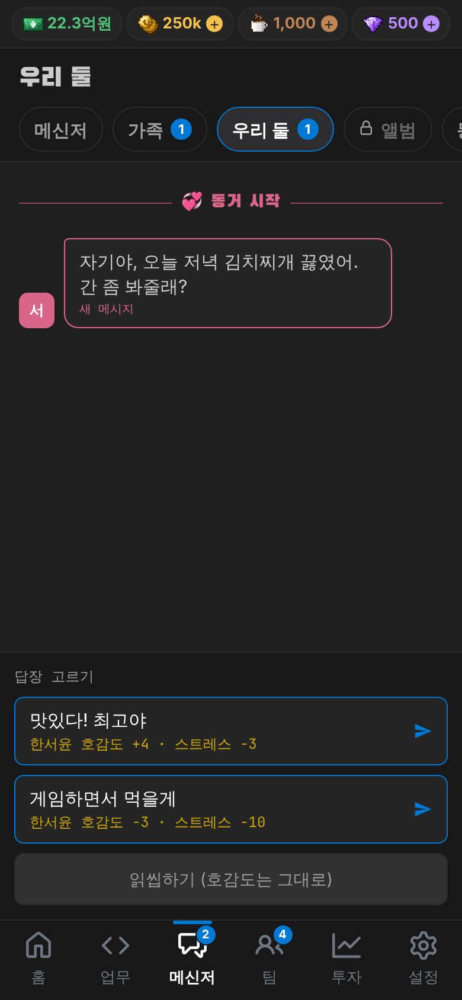
히로인 취향: 꿈을 전부 이뤄 주기 🌟#
일상 히로인 6명(서윤, 하린, 다은, 민지, 아영, 혜윤)은 꿈의 집 말고도 갖고 싶은 게 있어요. 신혼 동안 아직 없는 걸 매주 하나씩 우리 둘에서 혼잣말로 말해 줘요. 신혼 중에 꿈의 집 + 전부를 갖추면 노란 글씨로 나는 이제 모든 걸 가졌어. 꿈의 집도.. 꿈의 물건도.. 전부.. 그리고 자기도.. 사랑해. 다음 생에도 같이 살고 싶어❤️가 1번 오고, 취향 엔딩이 열려요.
- 필요한 것
- 한정판 피규어(110만), 레트로 게임기(450만), 한정판 운동화(240만)
- 꿈의 집 포함 합계
- 약 2억 5,800만 원(시작 가격)
- 필요한 것
- 서재로 쓸 오피스텔(꿈의 집 말고 오피스텔이나 원룸 1채), 다이버 시계(3,800만)
- 꿈의 집 포함 합계
- 약 2억 7,800만 원 (원룸 7,000만 기준)
- 필요한 것
- 미술품(15억), 명품 가방(1,200만)
- 꿈의 집 포함 합계
- 약 17억 8,200만 원
- 필요한 것
- 세 놓는 상가나 빌딩(상가, 빌딩, 물류창고 아무거나 1채), 다이버 시계(3,800만)
- 꿈의 집 포함 합계
- 약 34억 6,000만 원 (가장 싼 상가 레거시 대학가 상가 15억 4,000만 기준)
- 필요한 것
- 별장(꿈의 집 말고 전원주택/별장 1채), 스포츠카(시세 3억 1,000만, 실제로 내는 돈 약 3억 8,750만), 캠핑카(시세 8,000만, 실제 약 8,890만)
- 꿈의 집 포함 합계
- 약 36억 6,000만 원 (가장 싼 본토 별장 디버그 호숫가 별장 8억 기준)
- 필요한 것
- 클래식카(28억), 레트로 게임기(450만)
- 꿈의 집 포함 합계
- 약 41억 3,500만 원
- 민지는 동거용으로 산 7,000만 원 원룸이 그대로 서재로 인정돼요(꿈의 집이 아닌 원룸, 오피스텔이면 OK). 민지 루트는 원룸 → 꿈의 집 → 시계면 끝!
- 가격은 실물자산, 부동산 시작 가격 기준이에요. 실물자산은 기준 시세가 매주 조금씩 움직이는데, 시계, 운동화, 게임기는 +1%, 클래식카 +1.2%, 미술품, 가방 +0.8%, 피규어 +0.5%씩 오르고 스포츠카(−1.2%), 캠핑카(−0.6%)는 내려가요. 오르는 건 일찍, 새 차는 늦게 사는 게 이득이에요. 새 차는 출고가가 붙어서 스포츠카는 시세의 1.25배, 캠핑카는 약 1.11배를 내고 사요(보이는 시세는 중고 가격이에요).
- 판정은 물건을 사는 순간과 주를 넘길 때 해요. 마지막 하나를 신혼 15주 안에 사면 바로 메시지가 와요.
취향은 신혼 동안만 판정해요. 신혼 15주가 끝난 뒤에 다 모으면 아무 일도 없어요. 비싼 히로인이라면 신혼 전에 돈(투자)을 먼저 모아 두세요. 그리고 엔딩은 회차가 끝날 때도 결혼 중이어야 해요.
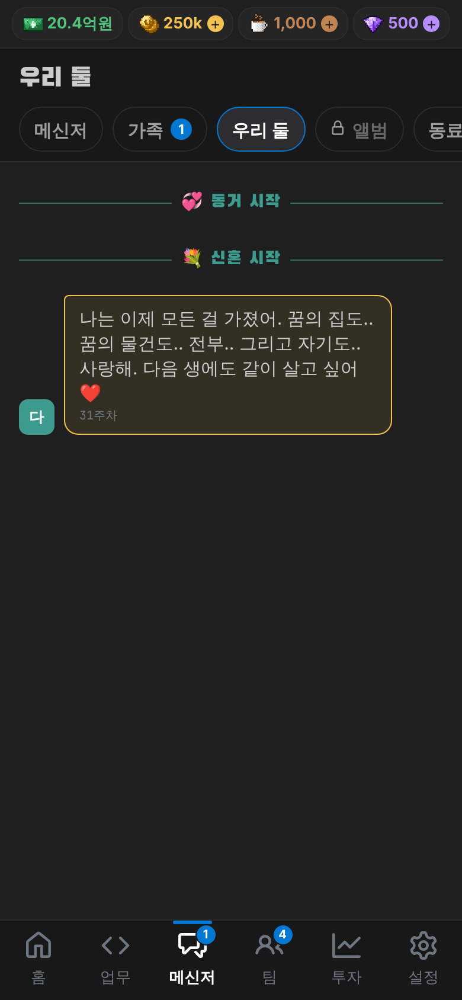
결혼 생활: 집안일 🧺#
결혼하면 일정표에서 데이트 칸이 사라져요. 대신 요일 칸을 누르면 맨 위에 + 집안일 돕기 체크가 생겨요. 그날 활동에 더해서 하는 거라 칸을 차지하지 않아요(하루에 스트레스 +3, 체력 −3).
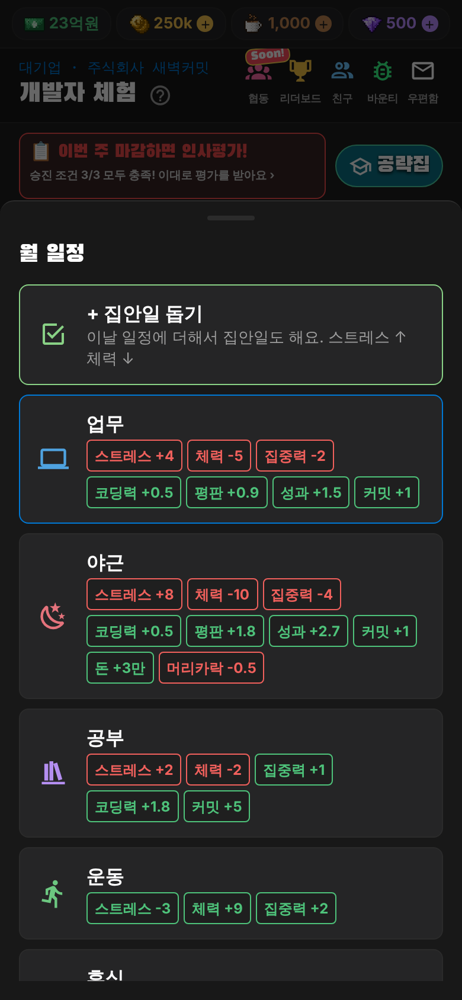
| 상황 | 결과 |
|---|---|
| 그 주 집안일 1번 이상 | 문제 없음. 아기 조건용 누적 횟수에 더해져요 |
| 그 주 집안일 0번 | 아내 호감도 −30 + 다음 주 자기야, 이번 주 집안일 내가 다 했어. 설거지 하나도 안 하더라? (미안해. 다음 주엔 내가 할게 (스트레스 +20) +2 / 회사 일이 바빠서 그래 −10) |
| 아이가 있는데 그 주 육아 0번 | 또 −30 + 자기야, 이번 주 애 얼굴 한 번도 안 봤지? (미안해. 이번 주말은 아이랑 보낼게 (스트레스 +20) +2 / 지금 프로젝트만 끝나면… −10) |
| 주말 칸에 업무 | 주말에도 일해? 호감도 −2 |
| 호감도 0 | 이혼 이야기 (아래) |
깎이는 호감도는 넘친 호감도에서 먼저 빠져요. 넘친 호감도를 넉넉히 쌓아 두면, 바쁜 주에 집안일을 한 번 빼먹어도 진짜 호감도는 안 줄어요. 다만 아기 조건(넘친 30)도 같이 줄어드니 조심하세요.
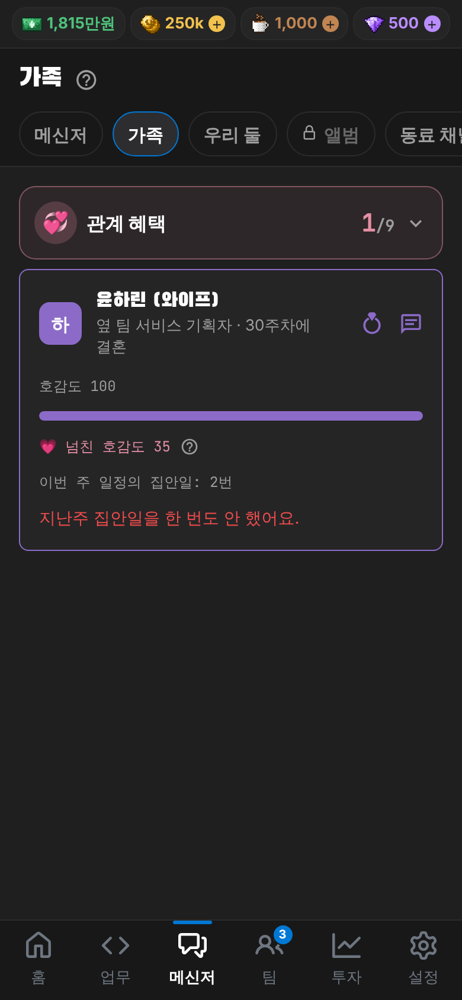
관계 혜택 (넘친 호감도로 켜지는 것)#
가족 탭 맨 위 관계 혜택 카드를 펼치면 지금 켜진 혜택이 보여요. 조건을 채운 건 전부 동시에 적용되고, 이혼하거나 어장이 들키면 다 꺼져요.
| 혜택 | 조건 | 효과 |
|---|---|---|
| 동거 | 동거 (넘친 호감도 필요 없음) | 그녀 메시지 비용 절반 |
| 신혼 | 신혼을 했고 아기 전 | 아기 제안까지 집안일 29 → 15번 |
| 설렘 | 연애, 결혼 + 넘친 30 | 매주 스트레스 −5 |
| 든든한 내 편 | 넘친 50 | 매주 스트레스 −5, 집중력 +10 |
| 맞벌이 | 결혼 + 넘친 70 | 주급 +50% (은서 회차의 특별 용돈과는 중복 안 돼요) |
| 집밥 | 결혼 + 넘친 70 | 매주 체력 +10 |
| 번아웃 방패 | 결혼 + 넘친 80 | 번아웃을 회차당 1번 막아 줘요 (평판 손실 없음) |
| 기념일 여행 | 결혼 + 넘친 80 | 결혼 후 13주마다 스트레스 −20 (업무는 그대로) |
| 가정적인 개발자 | 아이 + 넘친 100 | 매주 평판 +3, 인사평가 +3 |
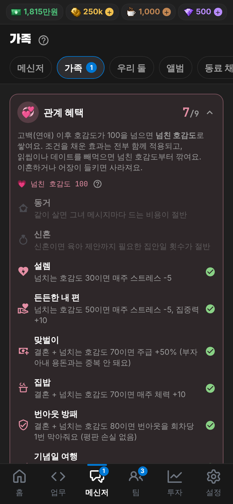
아기 👶#
| 아기 제안 조건 (모두) | 값 |
|---|---|
| 결혼한 지 | 15주 이상 |
| 이번 회차 누적 집안일 | 29번 (신혼을 했으면 15번) |
| 넘친 호감도 | 30 이상 |
| 신혼 기간 | 신혼 15주가 끝난 뒤 (신혼 중엔 안 와요) |
| 아이 | 아직 없고, 거절한 적 없음 |
제안은 자기야, 나 자기 닮은 애기 보고 싶어.(아영은 오빠, 오빠 코딩 머리에 내 체력이면 완벽한 풀스택 애기 나올 것 같지 않아? …)예요.
- "나도. 우리 닮은 애기 낳자." → 아기 탄생, 호감도 +10, 스트레스 +5. 이름 옆 표시가 ○○ 엄마가 되고, 일정에 육아 칸, 메신저에 앨범이 열려요.
- "난 우리 둘이면 충분해" → 호감도 −5, 아마 다시 이 얘기는 안 꺼낼 것 같아. 이번 회차엔 끝이에요. 읽씹도 거절과 같아요.
아영과 16주에 결혼하면 신혼 없이 가면 아기 31주, 신혼을 하면 32주쯤이에요. 신혼 15주가 결혼 15주 조건과 거의 겹쳐서 1주 정도만 늦어요. 신혼은 집안일 조건을 절반으로 줄여 주고 넘친 호감도도 크게 채워 주니, 할 수 있으면 하는 게 좋아요.
육아 칸과 아기 시기 메시지#
육아는 일정 칸 하나를 써요(하루 체력 −5, 스트레스 −2, 돈 −2만 원). 육아 1번 = 아이 성장 1이에요. 아기 시기엔 그녀 메시지가 3종 돌아가며 와요.
| 그녀 메시지 | 챙기는 답 | 바쁜 답 |
|---|---|---|
| 이번 주말엔 아이 데리고 셋이 나들이 가자! | −50만 원, 체력 −30, 스트레스 +30, 호감도 +2 | 코딩 +10, 스트레스 +10, 호감도 −12 |
| 새벽 수유 부탁해도 돼? (유치원 전까지) | 체력 −30, 스트레스 +30, 집중력 −10, +3 | 체력 +5, 스트레스 +10, −15 |
| 오늘 처음으로 혼자 일어섰어 (1번, 유치원 전까지) | 평판 −15, 성과 −2, 체력 −20, 스트레스 +20, +2 | 평판 +10, 성과 +2, 스트레스 +8, −10 |
이 밖에 아이가 있는 동안 첫 단어(…"버그"), 새벽 3시 수유와 배포 알림, 어린이집 대기 47번, 아빠랑 노트북 그림, 할머니 방문, 어린이집 열 소식 같은 가족 메시지 6종이 가끔 와요.
아이 성장, 아이 호감도, 아이 메시지 🎒#
아이가 다음 단계로 크려면 육아 횟수와 아이 호감도 둘 다 필요해요. 육아만 채우고 아이 호감도가 모자라면 단계 바로 앞에서 멈추고 🏠 아이 호감도가 N에 닿으면 아이가 ○○이 돼요가 떠요.
| 단계 | 누적 육아 | 아이 호감도 | 아이 메시지 묶음 |
|---|---|---|---|
| 아기 | 0 | — | 어린아이 20종 |
| 유치원생 | 6 | 30 | 어린아이 20종 |
| 초등학생 | 12 | 50 | 초등 20종 |
| 중학생 | 18 | 70 | 10대 22종 |
| 고등학생 | 24 | 90 | 10대 22종 |
| 대학생 | 30 | 110 | 대학 18종 |
아이 호감도는 태어날 때 30에서 시작하고 상한이 없어요. 매주 마감에 아이가 메시지 1개를 보내고, 가족 탭 아이 카드 바로 아래에 두 답이 떠요.
| 답 | 아이 호감도 | 그 밖의 효과 |
|---|---|---|
| ① 놀아 준다 / 챙긴다 | +5~+7 | 체력 −30~−40, 스트레스 +20~+30, 돈 조금(최대 −100만 원) |
| ② 바빠 | −5 | 체력 +5~+10, 스트레스 −20~−30, 코딩 +1~+3, 집중력 +2~+5, 돈 중 하나 |
| 답 안 함 | 다음 주 마감에 −8 | — |
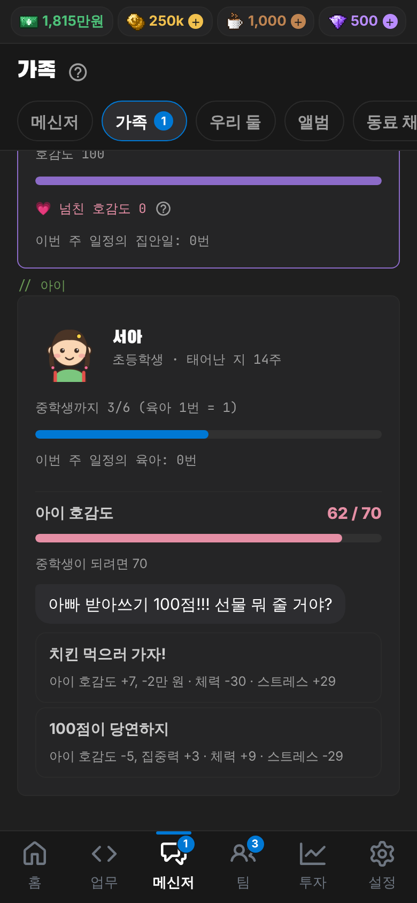
얼마나 걸릴까?#
아이 1명을 키울 때 걸리는 주차예요(태어난 주 = 1주, 쉬는 주 없음).
| 육아 / 주 | ① 답 비율 | 대학 메시지까지 | 100주 안에 못 감 |
|---|---|---|---|
| 1일 | 100% | 31주 | 0% |
| 2~6일 | 100% | 16주 | 0% |
| 2~6일 | 90% | 18주 (보통 16~25주) | 0% |
| 2~6일 | 75% | 31주 (보통 20~51주) | 약 0.1% |
| 2~6일 | 50% | 거의 못 감 | 약 96% |
| 아무리 많이 | 0% (②, 읽씹) | 영원히 유치원생 | 100% |
- 육아는 주 2일이면 충분해요. 그 이상은 유치원, 초등만 조금 빨라질 뿐, 대학은 아이 호감도(30 → 110) 때문에 16주보다 빨라지지 않아요.
- 대신 아이 메시지는 무조건 ①. ② 1번(−5)이나 읽씹(−8)이 ① 1~2번을 날려요.
- ① 답은 체력 −30~−40, 스트레스 +20~+30으로 무거워요. 실제 회차에선 육아, 집안일 6칸까지 겹쳐 번아웃 주가 생겨 대학까지 약 21주가 걸려요. 쉬는 주엔 육아도 아이 메시지도 멈춰요.
- 그러니 아이 엔딩을 노린다면 늦어도 80주차 전후에는 아기가 태어나야 해요.
아이의 진로 메시지 5개와 아이 엔딩 🎓#
아이가 각 단계에 들어서면 아이가 직접 메시지를 보내요(꼭 답해야 해요). 고른 답이 아이의 성향으로 쌓이고, 마지막 대학 메시지에서 엔딩이 정해져요. 어떤 답이 어떤 성향인지는 아래 접기 안에 있어요.
| 단계 | 아이 메시지 | 답 |
|---|---|---|
| 유치원 | 아빠! 유치원 어디 가? 친구 지호는 영어 유치원 간대! | 영어 유치원 −300만, 스트레스 +3 / 동네 숲 유치원 −30만, 스트레스 −3 / 코딩 블록 유치원 −100만 |
| 초등 | 아빠, 나 방과후에 뭐 해? 다들 학원 3개씩 다닌대… | 학원 3개 −150만 / 주말마다 같이 코딩, 체력 −4, 코딩 +1 / 실컷 놀아라, 스트레스 −4 |
| 중학 | …내 방 들어오지 마. 그리고 와이파이 비번 바꿨지? | 문 앞에서 이야기를 건다, 스트레스 +2 / 최신 게임기를 사 준다 −80만 / 단호하게 혼낸다, 스트레스 +5 |
| 고등 | 아빠, 나 진로 정했어. …개발자 할래. 아빠처럼. | "제일 좋은 선택이야", 스트레스 −5 / "의대 가라", 스트레스 +4 / "하고 싶은 거 다 해 봐", 스트레스 −3 |
| 대학 | 아빠… 해외 명문 대학 붙었어. 근데 첫해에만 8,000만 원이 든대. | 보내 준다 (−8,000만 원, 스트레스 +6) / 형편이 안 된다고 말한다, 스트레스 +4 |
스포일러: 아이 엔딩 5개가 갈리는 조건
엔딩은 위에서부터 먼저 맞는 것 하나로 정해져요. 회차가 끝날 때(100주차)도 결혼 중이어야 기록돼요.
| 성향 | 그 성향이 남는 답 |
|---|---|
| 압박 | 영어 유치원, 학원 3개, 단호하게 혼낸다, "의대 가라" |
| 자유 | 동네 숲 유치원, 실컷 놀아라, "하고 싶은 거 다 해 봐" |
| 코딩 | 코딩 블록 유치원, 주말마다 같이 코딩, "제일 좋은 선택이야" |
| 대화 | 문 앞에서 이야기를 건다 (중학) |
| 응석 | 최신 게임기를 사 준다 (중학) |
| 유학 / 거절 | 보내 준다 / 형편이 안 된다고 말한다 (대학) |
- 조건
- 대학 메시지에서 보내 준다. 앞의 선택은 상관없어요
- 보상
- 일반 팩 1
- 조건
- 대학에서 형편이 안 된다고 말한다 + 앞에서 압박(영어 유치원, 학원 3개, 단호하게 혼낸다, "의대 가라") 또는 응석(최신 게임기) 1개 이상 + 중학에서 문 앞에서 이야기를 건다를 안 고름
- 보상
- 일반 팩 1
- 조건
- 대학에서 거절 + 코딩(코딩 블록 유치원, 주말마다 같이 코딩, "제일 좋은 선택이야") 1개 이상, 엇나간 아이가 아닐 때
- 보상
- 일반 팩 1
- 조건
- 대학에서 거절 + 자유(동네 숲 유치원, 실컷 놀아라, "하고 싶은 거 다 해 봐") 1개 이상 + 코딩 0개, 엇나간 아이가 아닐 때
- 보상
- 일반 팩 1
- 조건
- 대학에서 거절 + 위 2~4에 모두 해당하지 않음. 가능한 답 조합 162가지 중 딱 1가지예요: 영어 유치원 → 학원 3개 → 문 앞에서 이야기를 건다 → "의대 가라" → 형편이 안 된다고 말한다
- 보상
- 일반 팩 1
- 코딩과 자유를 섞으면 2대째 개발자가 먼저 잡혀요. 자유로운 영혼은 코딩 선택이 하나도 없어야 해요.
- 스스로 일어선 아이를 노리다가 중학에서 문 앞을 빼먹으면 엇나간 아이가 돼요. 162가지 조합 중 유학 81, 엇나간 아이 54, 2대째 개발자 19, 자유로운 영혼 7, 스스로 일어선 아이 1이라, 거절할 거면 중학 문 앞이 제일 중요해요.
- 유학은 8,000만 원이 있어야 고를 수 있어요. 대학 메시지 전에 현금을 남겨 두세요.
아이 엔딩은 회차당 1개라 5회차가 필요해요. 엇나간 아이, 스스로 일어선 아이처럼 조건이 까다로운 걸 먼저 노리고, 유학 간 아이의 효도는 돈만 있으면 언제든 돼요.
가족 앨범 📷#
메신저 위쪽 줄의 앨범은 아기가 태어나면 열려요. 그 전엔 🔒 육아 단계 이후에 열려요. 아기가 태어나면 썸부터 지금까지의 사진이 앨범으로 묶여요.가 보여요. 펼쳐 보기를 누르면 책장을 넘기듯 한 장씩 넘어가고, 사진마다 그날의 한 줄과 엄마의 한마디가 붙어 있어요.
| 페이지 | 장수 | 정해지는 방법 |
|---|---|---|
| 썸, 연애, 결혼 | 각 1장 | 각 10종 중 이번 회차에 1장 (회차마다 바뀌고, 겹칠 수 있어요) |
| 아기 탄생 | 1장 | 고정 |
| 유치원, 초등, 중학, 고등 | 각 1장 | 그 단계 아이 메시지에서 고른 답의 사진 (각 3종) |
| 대학 | 1장 | 보내 준다 → 공항 / 거절 → 닫힌 방문 |
| 끝 | 1장 | 대학 선택 뒤, 그 회차 아이 엔딩 도장 |
한 회차에 사진은 최대 9장(+ 끝)이고, 사진 종류는 모두 45장이에요(썸 10, 연애 10, 결혼 10, 아기 1, 아이 14). 대학 선택을 하면 앨범이 한 번 저절로 열리고, 마지막 장을 넘기면 아이는 이제 대학생이 됐어요. 이 앨범은 여기까지예요.로 덮여요.
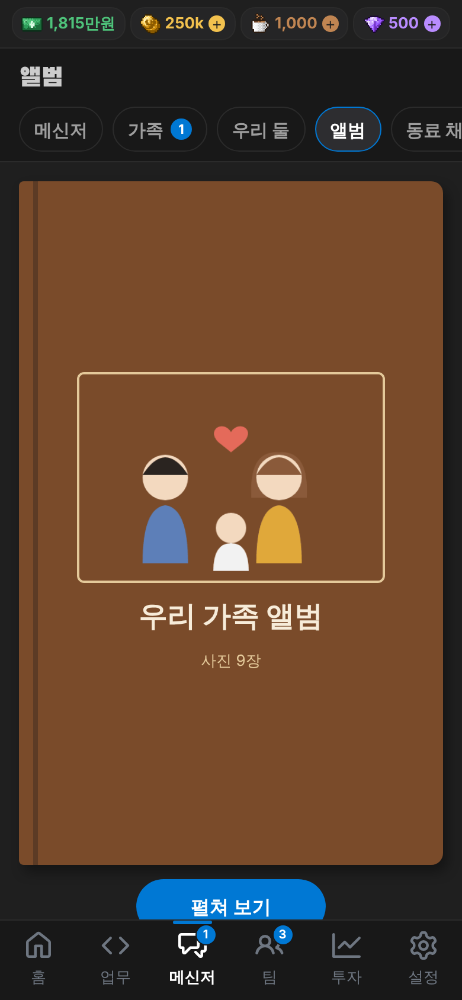
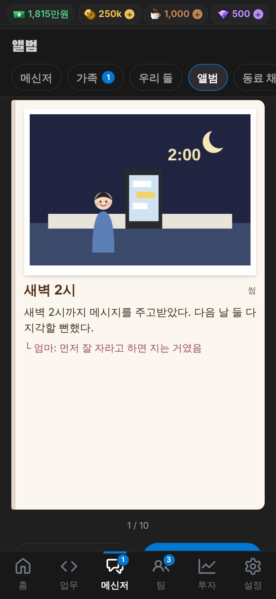
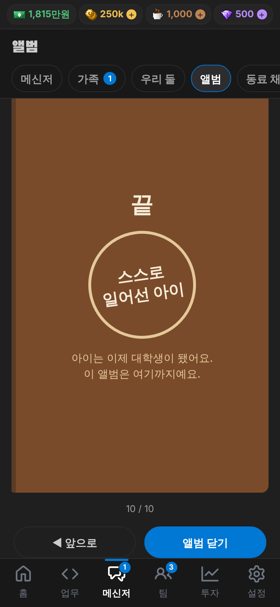
앨범은 그 회차 기록이라 다음 회차는 빈 앨범부터예요. 회차를 넘어 사진을 모아 두는 기능은 없어요. 이혼하면 아이와 함께 아이 사진도 사라져요. 사진 45장을 다 보고 싶다면 회차마다 유치원, 초등, 중학, 고등 답을 다르게 골라 보세요(3회차면 학교 사진 12장을 다 봐요).
이별, 이혼, 결혼 후 사건 💔#
연애 중 이별#
- 데이트 0번인 주: 호감도 −30 + 자기야, 이번 주 한 번도 못 봤네… 나 요즘 좀 서운해. (미안해. 다음 주엔 꼭 데이트하자 (스트레스 +20) +2 / 요즘 일이 너무 바빠서… −8)
- 호감도 0: 우리 이렇게 계속 만나는 게 맞나 싶어. 헤어지자. → 붙잡는다 (선물 -50만 원, 체력 -20, 스트레스 +30) 30% 성공(+8) / 알겠어. 그동안 고마웠어 이별. 읽씹은 동의로 처리돼요.
결혼 중 이혼#
아내 호감도가 0이 되면 나 이제 지쳤어. 우리 이혼하자.가 와요.
| 답 | 결과 |
|---|---|
| 붙잡는다 (꽃과 편지, 여행 -100만 원, 체력 -20, 스트레스 +30) | 30% 성공: 호감도 +8 …한 번만 더 믿어볼게. / 70% 실패: 100만 원은 나가고 이혼 |
| …알겠어 | 이혼 |
| (읽씹) | 이혼 |
- 그 회차엔 새 인연이 안 생겨요. 아이, 육아 칸, 아이 사진도 그녀와 함께 떠나요.
- 회차가 끝날 때까지 평판 0 고정, 스트레스 최소 70에서 안 내려감, 집중력 안 오름. 평판이 필요한 커리어 엔딩(CTO 취임 같은)은 사실상 막혀요.
- 100주를 끝까지 마치면 이혼 엔딩이 기록되고, 결혼, 동거, 신혼, 취향, 아이 엔딩은 모두 무효예요.
- 조건
- 결혼 중 집안일(아이가 있으면 육아도) 0번인 주마다 −30 → 호감도 0 → 이혼 메시지에서 …알겠어나 읽씹, 또는 붙잡는다 실패 → 그 상태로 100주 완주
- 보상
- 일반 팩 1
- 팁
- 도감용으로 노린다면 결혼 직후 집안일을 다 끄면 돼요. 그 회차의 다른 성과는 포기하세요.
- 조건
- 아기가 태어난 뒤 8주 이상 지나고, 그 모든 주에 육아 4일 이상 (한 주라도 3일 이하면 그 회차엔 불가). 번아웃, 병가로 쉬는 주는 세지 않아요
- 보상
- 일반 팩 1
- 팁
- 아이 엔딩과 같이 노리기 좋아요. 육아 4칸 + 업무 2칸으로 고정해 두세요.
가족 엔딩 총정리 📖#
동거, 신혼, 취향 엔딩은 각각 에픽 팩 1, 아이, 내조, 이혼은 일반 팩 1이에요. 전부 100주차에 그 상태여야 기록되고, 한 회차에 결혼 + 동거 + 신혼 + 취향 + 아이 + 내조가 동시에 기록돼요.
| 히로인 | 동거 엔딩 | 신혼 엔딩 |
|---|---|---|
| 서윤 | 서윤과 한 지붕 아래 | 서윤과 높은 천장 아래 신혼 |
| 하린 | 하린의 동거 기획서 | 하린의 완벽한 동선 |
| 다은 | 다은과 듀오 큐 | 다은과 바다 보이는 신혼 |
| 민지 | 민지의 연구실 옆 원룸 | 민지와 학회 대신 신혼여행 |
| 아영 | 아영과의 아침 루틴 | 아영의 펜트하우스 아침 |
| 혜윤 | 7년 만의 같은 현관 | 혜윤의 마당 있는 집 |
| 소라 | 소라의 버그 없는 집 | 소라의 출근 5분 신혼 |
| 지우 | 지우와 첫 커밋 같은 동거 | 지우와 통나무집 신혼 |
| 하나 | 하나와 새벽 3시의 집 | 하나와 호숫가의 조용한 배포 |
| 신혼 엔딩 | 조건 |
|---|---|
| 서윤과 높은 천장 아래 신혼 | 결혼 → 15주 안에 꿈의 집 → 신혼 제안 수락 → 100주차에도 결혼 중 |
| 하린의 완벽한 동선 | 같음 |
| 다은과 바다 보이는 신혼 | 같음 |
| 민지와 학회 대신 신혼여행 | 같음 |
| 아영의 펜트하우스 아침 | 같음 (아영 결혼의 숨은 조건은 아영 공략 스포일러) |
| 혜윤의 마당 있는 집 | 같음 |
| 소라의 출근 5분 신혼 | 같음 (개발 인플루언서 칭호) |
| 지우와 통나무집 신혼 | 같음 (개발 인플루언서 칭호) |
| 하나와 호숫가의 조용한 배포 | 같음 (개발 인플루언서 칭호) |
동거 엔딩 조건: 연애 중 집(원룸부터)을 갖고 동거 제안 수락 → 100주차에 동거 중이거나 결혼 중. 취향 엔딩 6개는 위 카드, 결혼 엔딩은 각 히로인 공략에 있어요.
실전 추천 루트 🗺️#
가족 엔딩 풀코스: 아영 + 운명적 만남#
- 운명적 만남 장비(1,500,000코인)를 사고, 회차 초반 일정에 운동 1칸. 아무와도 썸이 아닌 상태여야 해요.
- 2주차 썸 → 12주차쯤 연애데이트 6칸. 잔고 2,000만 원이 되면 투자 탭이 열려요.
- 원룸(또는 꿈의 집) 구매 → 동거보통 13주차쯤 동거해요.
- 16주차쯤 결혼집안일 매일 켜기. 꿈의 집 리버뷰 강변 펜트하우스는 결혼 전에 사 두면 바로 신혼.
- 신혼 15주별장, 스포츠카, 캠핑카까지 사면 아영의 모든 것. 돈이 부족하면 취향은 건너뛰어도 돼요.
- 32주차쯤 아기 → 50주차대 대학육아 4칸 이상 매주 + 아이 메시지 ①. 진로 답으로 원하는 아이 엔딩을 골라요.
이렇게 하면 한 회차에 결혼, 동거, 신혼, 취향, 아이, 내조 잘하는 남자까지 6개를 한 번에 모을 수 있어요.
돈이 없을 때: 다은, 민지#
꿈의 집 + 취향 합계가 3억 원 안쪽이라 투자를 크게 안 해도 취향 엔딩까지 가요. 다만 일반 히로인은 결혼이 60주대라 아이 엔딩까지는 빠듯해요. 혜윤은 결혼이 70주대라 아이가 대학까지 가기는 사실상 어려워요.
서윤과 데이트 6칸, 집안일 6칸, 육아 6칸으로 최선을 다하면 결혼 약 65주, 아기 약 81주, 대학 메시지가 100주차 안에 오는 건 약 25%예요. 재밌는 건 신혼을 안 하면 약 60%로 올라간다는 거예요. 100주차 바로 앞에서 갈리는 아슬아슬한 회차라 회차마다 차이가 커요. 신혼 15주 동안은 아기 이야기가 안 와서 아기가 1주쯤 늦어지고, 100주차 끝자락에선 그 1주가 커요. 일반 히로인 회차는 결혼, 동거, 신혼, 취향, 내조까지만 노리고, 아이 엔딩은 아영 회차에 몰아서 하는 게 편해요.
주차 표 전체 🔬#
100주 회차에서 보통 걸리는 주차예요(괄호는 빠른 회차에서 늦은 회차까지의 범위). 목표 히로인에게 가장 좋은 답, 동거, 신혼, 아기 수락, 아이 메시지 ①을 고르고, 체력, 스트레스, 돈은 막히지 않게 관리했을 때예요.
| 설정 | 결혼 | 신혼 | 아기 | 대학 메시지 | 100주차 가족 엔딩 |
|---|---|---|---|---|---|
| 아영 운명적 만남, 동거, 꿈의 집, 취향 | 16 | 17 | 32 | 52~53 (51~54) | 동거, 신혼, 취향, 아이, 내조 모두 100% |
| 아영 운명적 만남, 집 없음 | 16 | — | 31 | 51 (50~53) | 아이, 내조 100% |
| 아영, 집안일 1칸, 육아 4칸 | 16 | — | 46 | 61 (61~63) | 아이, 내조 100% (집안일 29번 채우느라 아기가 15주 늦음) |
| 아영, 아이 메시지 늘 ② | 16 | 17 | 32 | — | 아이는 유치원생에서 멈춤, 아이 엔딩 0% |
| 서윤, 동거, 꿈의 집, 취향 | 65 | 66 | 81 | 99~100 | 동거, 신혼, 취향, 내조 100%, 아이 약 25% |
| 서윤, 집 없음 | 65 | — | 80 | 99~100 | 내조 100%, 아이 약 60% |
| 다은, 동거, 꿈의 집, 취향 | 66 | 67 | 82 | 100 | 동거, 신혼, 취향, 내조 100%, 아이 20% |
| 혜윤, 동거, 꿈의 집, 취향 | 72 | 73 | 88 | — | 동거, 신혼, 내조 100%, 취향 63%, 아이 0% |
스포일러: 진로 답별 아이 엔딩
진로 답만 바꾸면 유학 → 유학 간 아이의 효도, 압박 + 거절 → 엇나간 아이, 코딩 → 2대째 개발자, 자유 → 자유로운 영혼이 매번 그대로 나와요.
혜윤 취향이 63%인 건 클래식카 때문이에요. 클래식카의 기준 시세는 투자 탭이 열린 뒤 매주 1.2%씩 올라서(60주면 약 2배, 28억 → 57억 안팎) 60억이 있어도 못 사는 회차가 생겨요. 혜윤 루트라면 클래식카는 일찍 사 두세요.
자주 묻는 질문#
- 동거 제안을 거절했는데 다시 받을 수 있나요?
- 그 회차엔 안 와요. 다음 회차에 다시 와요. 거절해도 신혼은 꿈의 집만 있으면 따로 가능해요(동거 엔딩과 반값만 없어요).
- 집을 샀는데 동거 제안이 안 와요.
- 산 주에는 안 오고 산 주의 다음 주가 끝날 때 와요. 또 상가, 물류창고, 리조트, 농지는 집이 아니에요. 원룸, 오피스텔, 아파트, 전원주택/별장이어야 해요.
- 은서와 결혼했는데 우리 둘이 안 열려요.
- 은서, 소피, 소현, 은혜는 동거, 신혼이 없어요. 은서는 결혼 뒤 아기는 생길 수 있어요.
- 신혼이 끝나면 혜택도 끝나나요?
- 신혼 대사는 15주로 끝나지만, 아기까지 집안일 절반 혜택은 아기가 생길 때까지 남아요. 동거했다면 반값도 계속이에요.
- 아이가 유치원생에서 안 커요.
- 아이 호감도가 모자란 거예요. 가족 탭 아이 카드 아래 메시지에 ①로 답하세요. ②나 읽씹이 많으면 영원히 안 커요.
- 육아를 많이 하면 빨리 크나요?
- 주 2일 이상이면 대학까지는 아이 호감도가 병목이라 더 빨라지지 않아요. 다만 내조 잘하는 남자는 매주 4일이 필요해요.
- 앨범 사진이 다음 회차에 남나요?
- 아니요, 앨범은 회차마다 새로 시작해요.
- 집안일을 깜빡했어요. 바로 이혼인가요?
- 아니요. 한 주 −30(넘친 호감도부터 빠짐)이고, 호감도가 0이 돼야 이혼 이야기가 와요. 그때도 붙잡는다 30%가 있어요.